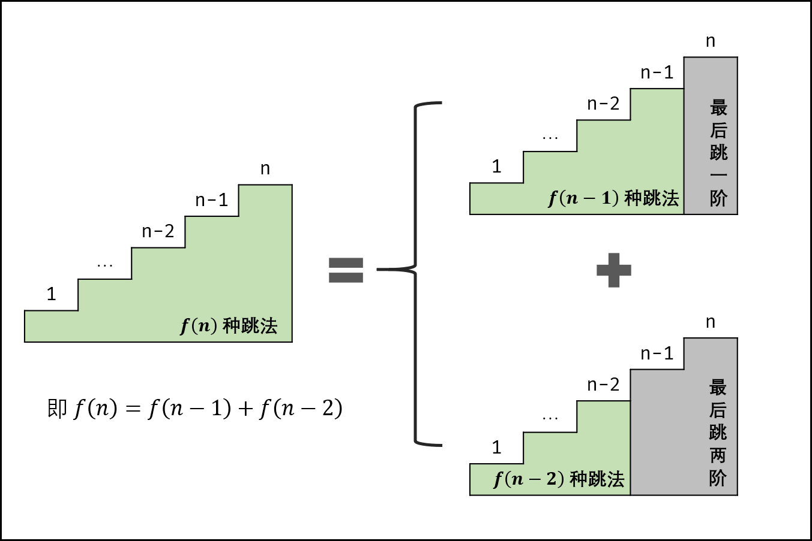

You are climbing a stair case. It takes n steps to reach to the top.
Each time you can either climb 1 or 2 steps. In how many distinct ways can you climb to the top?
Note: Given n will be a positive integer.
Example 1:
Input: 2 Output: 2 Explanation: There are two ways to climb to the top. 1. 1 step + 1 step 2. 2 steps
Example 2:
Input: 3 Output: 3 Explanation: There are three ways to climb to the top. 1. 1 step + 1 step + 1 step 2. 1 step + 2 steps 3. 2 steps + 1 step
解题分析
最简单只有一个台阶，只有 1 种方法；
当有两个台阶时，可以从地面跳起；也可以从第一个台阶跳起；
以此类推：当第 n 个台阶时，可以从第 n-2 个台阶跳起；也可以从第 n-1 个台阶跳起。

到这里就很明显了，这是一个斐波那契数列。
让 D瓜哥 使用 动态规划的模式 来重新解读一下：
-
刻画一个最优解的结构特征：跳到第 n 个台阶最多的跳法。
-
递归地定义最优解的值：
dp[n] = dp[n-2] + dp[n-1]。 -
计算最优解的值，通常采用自底向上的方法：D瓜哥也按照动态规划（注意表格）的方式来实现，采用自底向上+备忘录的方式来求解，创建一个长度为 n+1 的数组，第 i 个元素表示有相应的跳法，则第 1 个元素为 1，第 2 个元素为 2。然后以此类推……
-
利用计算出的信息构造一个最优解。这一步不需要，暂时忽略。
D瓜哥 再插播一句，知道是斐波那契数列，各种解法都好搞了，甚至可以使用斐波那契数列公式来解题了。😆
\$F_{n}=1 / \sqrt{5}\left[\left(\frac{1+\sqrt{5}}{2}\right)^{n}-\left(\frac{1-\sqrt{5}}{2}\right)^{n}\right]\$
1
2
3
4
5
6
7
8
9
10
11
12
13
14
15
16
17
18
19
20
21
22
23
24
25
26
27
28
29
30
31
32
33
34
35
36
37
38
39
40
41
42
43
44
45
46
47
48
49
50
51
52
53
54
55
56
57
58
59
60
61
62
63
64
65
66
67
68
package com.diguage.algorithm.leetcode;
/**
* = 70. Climbing Stairs
*
* https://leetcode.com/problems/climbing-stairs/[Climbing Stairs - LeetCode]
*
* You are climbing a stair case. It takes n steps to reach to the top.
*
* Each time you can either climb 1 or 2 steps. In how many distinct ways can you climb to the top?
*
* *Note:* Given n will be a positive integer.
*
* .Example 1:
* [source]
* ----
* Input: 2
* Output: 2
* Explanation: There are two ways to climb to the top.
* 1. 1 step + 1 step
* 2. 2 steps
* ----
*
* .Example 2:
* [source]
* ----
* Input: 3
* Output: 3
* Explanation: There are three ways to climb to the top.
* 1. 1 step + 1 step + 1 step
* 2. 1 step + 2 steps
* 3. 2 steps + 1 step
* ----
*
*
* @author D瓜哥, https://www.diguage.com/
* @since 2020-01-23 21:29
*/
public class _0070_ClimbingStairs {
/**
* Runtime: 0 ms, faster than 100.00% of Java online submissions for Climbing Stairs.
*
* Memory Usage: 40.8 MB, less than 5.26% of Java online submissions for Climbing Stairs.
*
* Copy from: https://leetcode.com/problems/climbing-stairs/solution/[Climbing Stairs solution - LeetCode]
*/
public int climbStairs(int n) {
int[] dp = new int[n + 1];
dp[0] = 1;
dp[1] = 1;
for (int i = 2; i <= n; i++) {
dp[i] = dp[i - 1] + dp[i - 2];
}
return dp[n];
}
public static void main(String[] args) {
_0070_ClimbingStairs solution = new _0070_ClimbingStairs();
int r1 = solution.climbStairs(2);
System.out.println((r1 == 2) + " : " + r1);
int r2 = solution.climbStairs(3);
System.out.println((r2 == 3) + " : " + r2);
int r3 = solution.climbStairs(4);
System.out.println((r3 == 5) + " : " + r3);
}
}